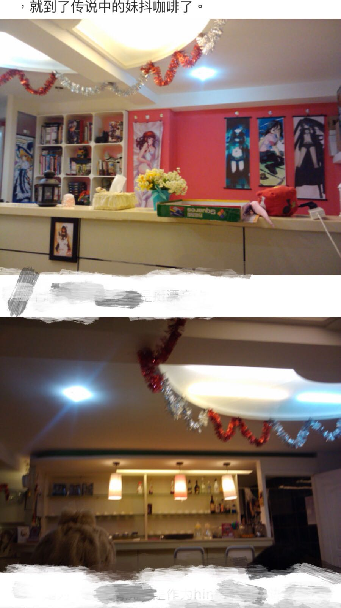
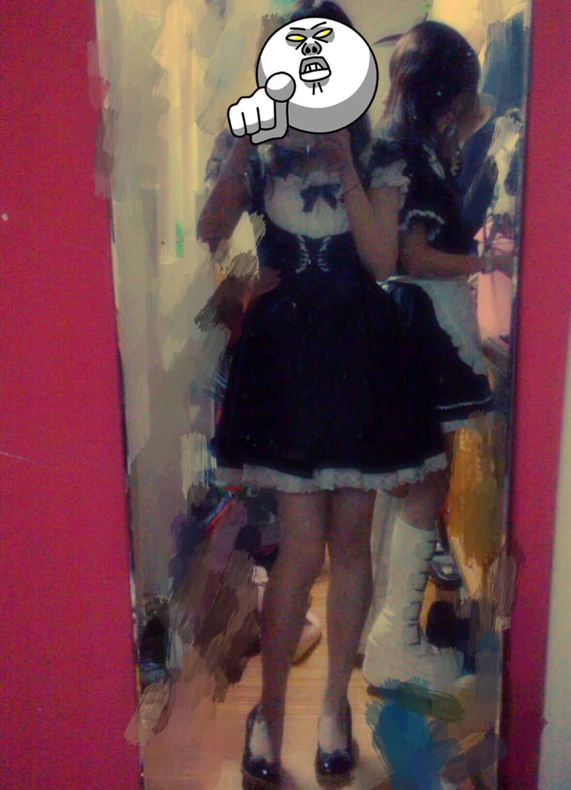

正文:
9.29已更新
大一的时候，寒假回家在本地的女仆咖啡找了兼职，刚开始只是和朋友去玩儿的，当过消费者一时兴起，没想到陆续在那里度过了差不多一年半的时间。
下面从几个方面说说我经历的女仆咖啡
环境：11年至今本地我所知道的大约有过四五家较有名气的专门女仆咖啡，大部分兼桌游店。另有少部分兼清吧我认为已经不能作为女仆咖啡讨论。后来没有再关注此领域不知道现在如何，但大部分女仆店经营不善已经关门。而我当时去的店由私人经营，也看过店主遇到很多困难，陆陆续续改换三次店址，至今仍在经营。为了方便下文我就称“我们店”来代替当初兼职的咖啡店。
大部分的女仆店内部自然以粉色为主，我也探店过许多家，店面一般不会太大，装修上不外乎粉与白搭配，暖色灯光，营造温馨治愈氛围。大多有小吧台，聊天区（桌游区），沙发区（主机游戏区），小厨房，更衣间。店内有众多Acg相关物品，墙饰以照片，动漫立绘，挂画等为主。
详细说一下我们店最初的样子，也是我最喜欢的时期。图片摘自自己当年的探店博文，2011年1月

当时店门很小，门上铃铛装饰，楼梯两侧墙壁挂有妹子们的照片，后来曾加过留言墙，拾级而上就到了二楼主店面。左手吧台区，调配饮品都在这里，右边的小门进去是小厨房，制作萌萌的蛋包饭。吧台对面为上图，架子上都是店主及朋友们的私藏。漫画游戏轻小说绘本杂志等。被挡住的地方是桌子们。楼梯右手是沙发区，连有PS和Wii。后面一个很小的更衣间。虽然整个店都很小但是分区齐全。
女仆装：店内提供女仆装数套，当值的女仆们轮流穿，定期清洗。当然也可以自带女仆装，毕竟体型上因人而异。女仆装大多为改良版或动漫款，打底和围裙是必备的，没错，围裙是女仆本体，不带围裙不能见客人。另外头饰，手饰可以适当搭配。面部要求淡妆，虽然我当年竟然就顶着素面朝天也没人管。
 我是喜欢自拍的hentai以及凌乱的更衣间
工作内容：
1.场内
从客人进门开始迎接，在楼梯上的妹抖要说 お帰りなさい、ご主人様，遇到女性客人，则说お嬢様。带客人入座，递上menu。然后在旁听候吩咐。客人有什么问题都要耐心解答。客人走的时候要鞠躬微笑恭送并说 いってらっしゃい。
一般女仆店都可以点女仆陪聊，话题多为闲聊或二次元。妹抖们性格也很多样，有温柔聆听型，姐姐型，软妹子型，傲娇型，高冷型，还有我这种面瘫型。（全部随口分的，并不用给妹抖tag化了，本来人类就是有多样性的物种）另外用语言骚扰妹抖是绝对禁止的，请聊聊健康积极的话题。
如果一个人来店里觉得无聊，没关系。可以喊一个或几个妹抖陪玩桌游或者主机游戏，完全新手也不要紧，妹抖会耐心调教（？）
此外，也可以付费和妹抖合影，私自摄影是禁止的。想喝指定妹抖做的咖啡，想要她为你画萌萌蛋包饭，都可以。至于对女仆咖啡有偏见和存有绅士（hentai）的要求，那只能说是宅男们的大误了。
2.场外
这一部分算是少数店才有的活动了。有大型漫展的时候，我们店也会在场馆定好特定展位或休息区域，部分女仆会前往现场售贩食品饮料周边等。
餐饮：女仆店一般会提供简单的餐饮，比如蛋包饭焗饭这样的主食或者一些小食。比较有特色的是女仆亲手研磨制作的女仆咖啡和拿着番茄酱为你的蛋包饭画上对主人要说的话（难度好高，我只会画眼睛。当时店主致力研究新菜单，夏天还有提供特调鸡尾酒。哦对，menu都是特制的，非常萌。
其他：这里是想到什么说什么的闲谈。不管是日本还是国内的女仆咖啡约定俗成的事就只有一个：
客人禁止和女仆恋爱！
客人禁止和女仆恋爱！
客人禁止和女仆恋爱！
重要的事说三遍，如果可以，我想说一万遍。
第一次正经的写长答案，因为大多涉及回忆，逻辑上不知道有没有问题。欢迎指正。
————————————————————
差不多更新完了，变成了一个对少女时期的回忆贴，很多人很多事想想也是怀念。答着答着语气就变少女和中二了。诶，年轻过。